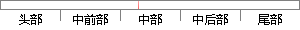

再语音识别过程中，尤其是当针对孤立词语识别系统，正确的判定词语的起末端点为模型匹配和提升识别率起着不可替代的作用，既可以将信号处理时间削弱至最小，又可以清理掉无声段的噪声影响，最终提高系统的识别新能，在一定程度上端点检测的正确与否直接影响着整个辨识系统的性能。
片段位置图

相似结果|
相似片段 1：在语音识别过程中，尤其是当针对孤立词语音识别系统，正确的判定词语的起末端点为模型匹配和提升识别率起着不可替代的作用，既可以将信号处理时间削弱至最小，又可以清理掉无声段的噪声影响，最终提高系统的识别性能，在一定程度上端点检测的正确与否直接影响着整个辨识系统的性能。语音端点检测同样也为语音增强与语音编码的一个非常重要组成部分。语音信号属于随时间变化的非平稳的信号中的一类，它生成的具体过程同发声器官
|
※ 片段修改建议 ※
近似词参考：- 识别：辨认
- 过程中：过程当中
- 孤立：伶仃
- 正确：准确 精确
- 判定：鉴定 剖断 判断 断定
- 末端：结尾 末尾 末了
- 模型：模子
- 匹配：立室
- 提升：晋升 提拔
- 不可：不成 不行 弗成
- 替代：替换
- 作用：感化
- 信号：旌旗灯号
- 处理：处置 处置惩罚
- 时间：时候
- 削弱：减弱
- 清理：清算
- 最终：终究 终极
- 提高：进步
- 系统：体系
- 识别：辨认
- 正确：准确 精确
- 整个：全部
- 系统：体系
- 性能：机能
系统自动生成语句：再语音辨认过程当中，尤其是当针对伶仃词语辨认体系，准确的鉴定词语的起结尾点为模子立室和晋升辨认率起着不成替换的感化，既可以将旌旗灯号处置时候减弱至最小，又可以清算掉无声段的噪声影响，终究进步体系的辨认新能，在一定程度上端点检测的准确与否直接影响着全部辨识体系的机能。
注：本片段修改建议为系统自动生成，仅供参考。